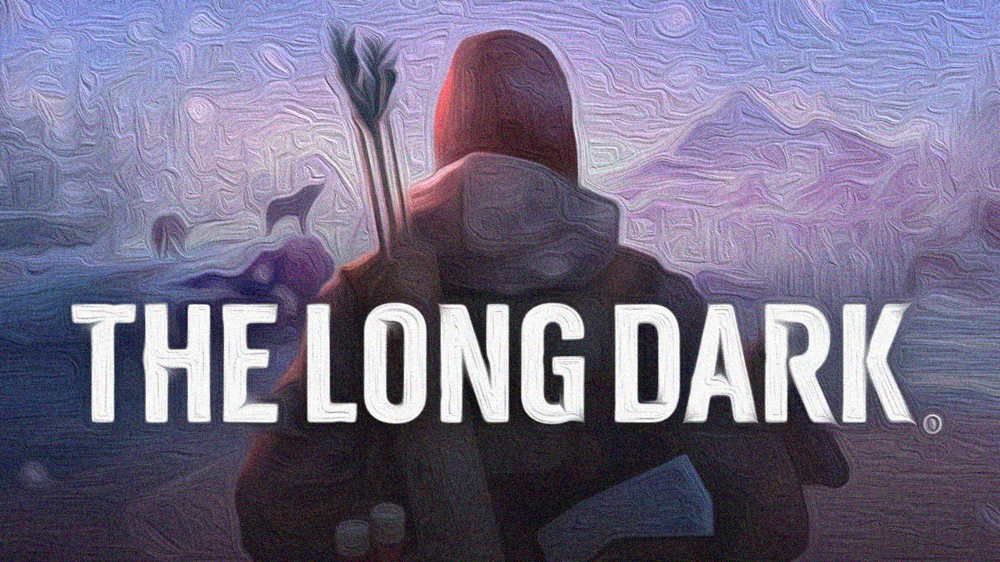

The Long Dark değişik bir oyun. Ä°lk bakışta bir hayatta kalma ve “yürüme” simülatörü olarak görülebilir, ama öyle değil. Dünya yeni bir jeolojik çağa giriyor, uyum sağlayabilenler belki hayatta kalacak ama canlıların büyük bir bölümü yeryüzünden silindi veya silinmek üzere.
İşte böyle bir dünyada hayatta kalma mücadelesi veriliyor. Tamam en zor düzey olan interloper’da 5-10 gün bile hayatta kalabilmek çok zor ama en kolay düzey pilgrim’de ister 500, ister 1000 gün hayatta kaldıktan sonra kaçınılmaz son ile yüzleşmek durumundasınız. - â˜ ï¸ Ölümâ˜ ï¸ - Çünkü kaynaklar tükeniyor, terk edilmiş evlerde bulunan bozuk yiyeceklerin yerine yenisi gelmiyor, avlanan tavşanların, geyiklerin, kurtların soyu zamanla tükeniyor, soğuktan korunmak, karı eritip su yapabilmek için yakacak bulamadığınız bir zaman geliyor ve başınızı ellerinizin arasına alıp kaçınılmaz sonu beklemekten başka yapacak bir şey kalmıyor.